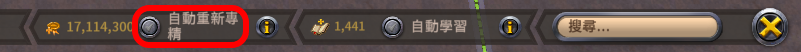
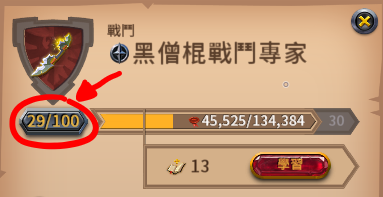
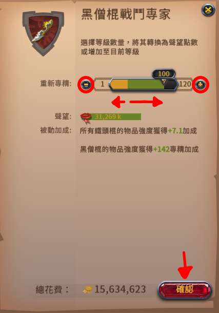

戰鬥聲望點
戰鬥聲望點(也稱自由點)獲取、使用、自動重新專精。
獲取
裝備中的頭盔、護甲、鞋子、武器、副手，如果該物品內圈或外圈達到 Lv100 或以上，則溢出的PvE聲望會以一定比例轉為戰鬥聲望點。
聲望溢出轉換為戰鬥聲望點的比例：(內外圈皆同)
| 裝備類型 | 轉換比例 |
| 頭盔 | *0.025 |
| 護甲 | *0.05 |
| 鞋子 | *0.025 |
| 武器 | *0.1 |
| 副手 | *0.005 |
某物品如果內外圈皆為 Lv100 或以上，獲得的戰鬥聲望點會重複計算。
自動重新專精
如果開啟，獲得的戰鬥聲望點提高至 4 倍，
但是每獲得 1 點戰鬥聲望點，會消耗大約 1 銀幣。(能被全區折扣減免)
使用
點擊裝備的內圈或外圈圖示，進到聲望進度條介面，按下等級按鈕。(至少要Lv1)
進入到升級介面

| 把拉桿往右拉 (點擊"+"按鈕) |
可以花費戰鬥聲望點直接升級內外圈裝備的等級。 裝備的外圈等級到Lv100就無法經由PvE聲望直接升級了，僅能使用戰鬥聲望點升級到Lv120。 每 1 點戰鬥聲望點可以轉換成：(內外圈皆同)
|
||||||||||||
| 把拉桿往左拉 (點擊"-"按鈕) |
可以花費銀幣將等級進度條的聲望轉為戰鬥聲望點。 自動重新專精與降等法的比較：(同時獲得10,000點PvE聲望、且武器為雙手武器)
兩種方法來刷戰鬥聲望點的速度和銀幣消耗皆同。
不推薦用這種方法來刷戰鬥聲望點。 |
計算
計算轉換成的戰鬥聲望點：
目前金幣價格
 。(用於計算全區折扣)
。(用於計算全區折扣)
| 滿Lv100？ | 內圈 | 外圈 |
| 頭 | ||
| 甲 | ||
| 鞋 | ||
| 武器 | ||
| 副手 | ||
是否開啟自動重新專精 |
||
每獲得
PvE聲望，會累積 0 戰鬥聲望點，並消耗 0 銀幣。
編輯紀錄
作者: runnywolf
最後編輯日期: 2023/4/30